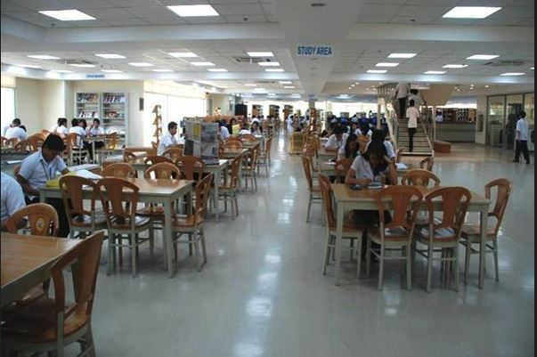

Our Facilities

Study Areas
The Library has open reading areas in the 2nd and 3rd floors of the library for reading and serious study. They are available on a first come-first serve basis.

Discussion Rooms
Discussion rooms are available for currently enrolled students. Inquiries for the use of these rooms should be made at the Office of the Chief Librarian (2nd Floor).
Faculty Room
Located at the 2nd floor of the library and is provided with two (2) computer units w/ internet connections. It can accommodate 12-15 faculty at one time.